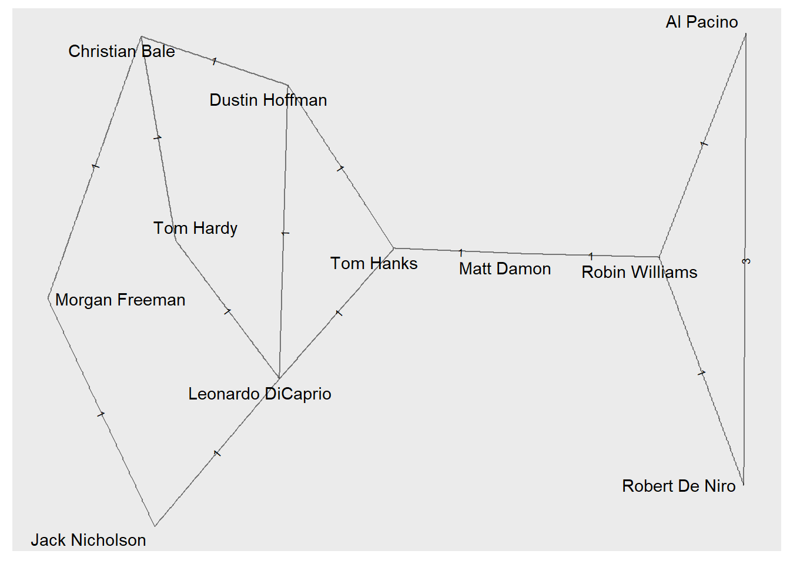
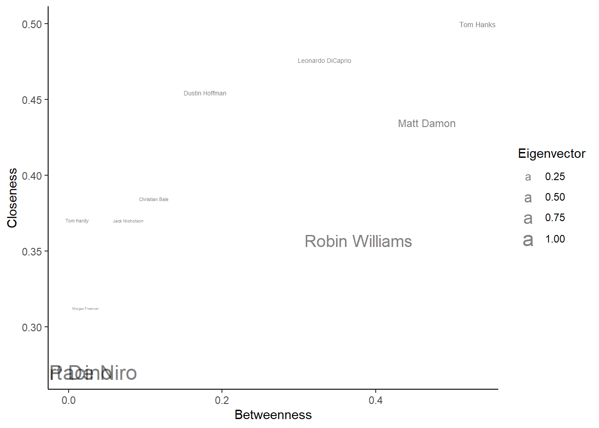
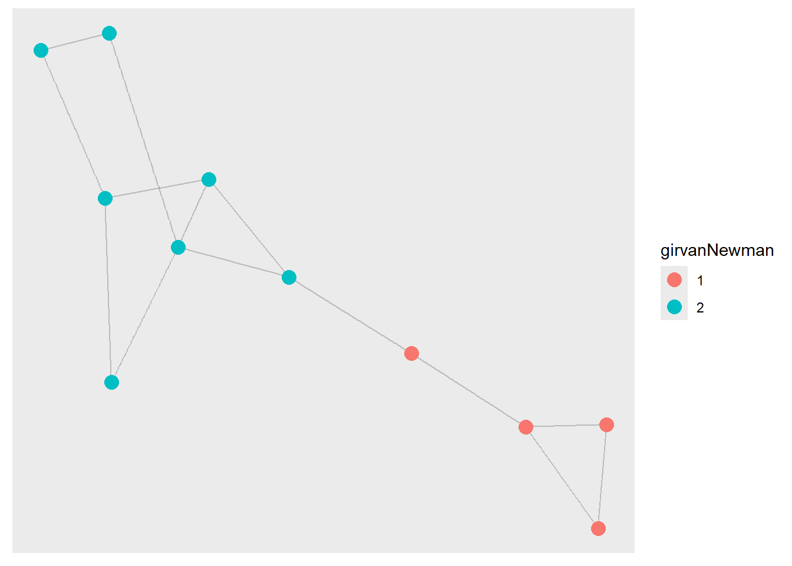
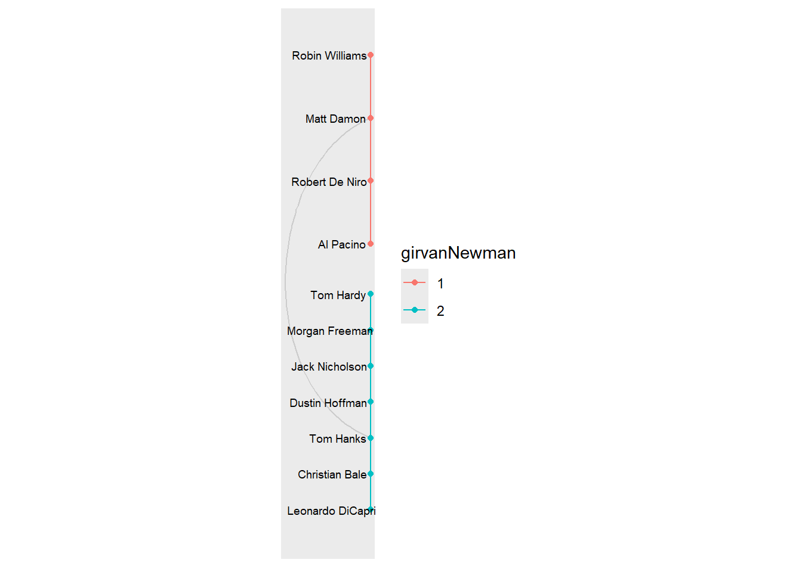

#importing libraries
library(igraph)
Attaching package: 'igraph'The following objects are masked from 'package:stats':
decompose, spectrumThe following object is masked from 'package:base':
unionlibrary(ggplot2)
library(ggraph)#importing libraries
library(igraph)
Attaching package: 'igraph'The following objects are masked from 'package:stats':
decompose, spectrumThe following object is masked from 'package:base':
unionlibrary(ggplot2)
library(ggraph)#clearing workspace
rm(list = ls())#set seed
set.seed(1111)
#importing network from github
hollywood.graphml = "https://github.com/keerthibalaji2024/Homework_2/raw/main/hollywood.graphml"
#reading graph
actors=read_graph(hollywood.graphml,format='graphml')
summary(actors)IGRAPH 560b536 UNW- 11 14 --
+ attr: wonOscar (v/n), color (v/c), name (v/c), id (v/c), weight (e/n)base=ggraph(graph = actors)Using "stress" as default layoutbase + geom_edge_link(
aes(label = weight), # Use weight for both label and width
alpha = 0.5,
label_size = 2.5,
angle_calc = 'along' # Optional: Draws the label along the edge line
) +
geom_node_text(
aes(label = name),
repel = TRUE)
#add centrality measures
eigen=eigen_centrality (actors)$vector
close=closeness(actors,normalized=T)
betw=betweenness(actors,normalized=T)
#create a dataframe for them
DFCentrality=as.data.frame(cbind(eigen,close,betw),stringsAsFactors = F)
names(DFCentrality)=c('Eigenvector','Closeness','Betweenness')
DFCentrality$person=row.names(DFCentrality)
row.names(DFCentrality)=NULL
# dataframe
head(DFCentrality) Eigenvector Closeness Betweenness person
1 0.60670504 0.3571429 0.37777778 Robin Williams
2 0.01469953 0.3703704 0.01111111 Tom Hardy
3 0.03468977 0.4545455 0.17777778 Dustin Hoffman
4 0.03714365 0.4761905 0.33333333 Leonardo DiCaprio
5 0.07209892 0.5000000 0.53333333 Tom Hanks
6 1.00000000 0.2702703 0.00000000 Al Pacino#create correlation plot
ggplot(DFCentrality, aes(x=Betweenness, y=Closeness)) +
theme_classic() +
geom_text(aes(label=person,size=Eigenvector),show.legend = T,alpha=0.5) 
#most of the actors remain spread out from each other and have low eigenvector scores but three stand out. Al Pacino, Robert De Niro, and Robin Williams, who have the highest eigenvector centrality. Of these three, Robin Williams has the highest closeness and betweenness centrality as well. Overall, Tom Hanks has the higest betweenness and closeness centrality. #are communities possible?
#plotting random net
RandomNet <- sample_gnp(length(V(actors)),p=edge_density(actors))
#transitivity rate
transitivity(actors)/transitivity(RandomNet)[1] 1.027778#based on the transitivity score, it looks like communities are possible#Girvan-Newman
partition_girvanNewman_best <- cluster_edge_betweenness(actors)Warning in cluster_edge_betweenness(actors): At
vendor/cigraph/src/community/edge_betweenness.c:503 : Membership vector will be
selected based on the highest modularity score.table(membership(partition_girvanNewman_best))
1 2
4 7 max(partition_girvanNewman_best$modularity)[1] 0.4199219#Louvain
partition_louvain_optimal <- cluster_louvain(actors)
table(membership(partition_louvain_optimal))
1 2 3
3 4 4 max(partition_louvain_optimal$modularity)[1] 0.4121094#Girvan-Newman is the bestV(actors)$girvanNewman=as.factor(membership(partition_girvanNewman_best))
base=ggraph(graph =actors,layout = 'fr') + geom_edge_link(alpha=0.2)
base + geom_node_point(aes(color=girvanNewman), show.legend = T, size=4)
#alternate plot
V(actors)$degree = degree(actors)
ggraph(actors, layout = 'hive',
axis = girvanNewman,
sort.by = degree
) +
geom_edge_hive(color='grey80') +
geom_axis_hive(aes(colour = girvanNewman),
label = F) +
geom_node_point(aes(colour = girvanNewman)) +
geom_node_text(aes(label = name),
repel = TRUE,
max.overlaps = 50, # avoid overlap
size = 2.5) +
coord_fixed()